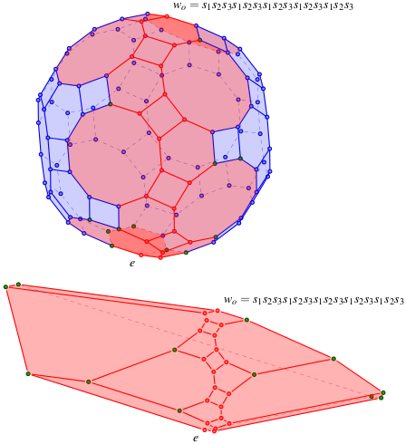
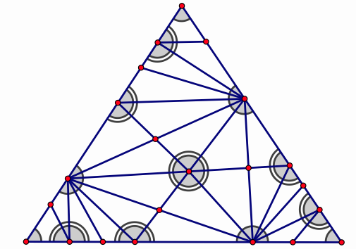
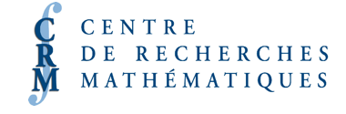

Algebraic and Geometric Combinatorics of Reflection Groups
(Spring School
/ Conference)
Information
{kind=link}
Algebraic and Geometric Combinatorics of Reflection Groups(Spring School and Conference), part of the Winter 2017 thematic session of the Centre de Recherches Mathématiques (Montréal), with the participation of LaCIM (Laboratoire de Combinatoire et Informatique Mathématique) at UQÀM
Montréal, QuébecMay 29 to June 9, 2017
- May 29-June 2, 2017 (Spring school)
- June 5-June 9, 2017 (Conference)
Contact: Organization:
This meeting will lie at the interface between algebraic and geometric combinatorial aspects of Coxeter groups and reflection groups. Reflection groups appear in very many domains of mathematics, for instance,
Properties of these groups, finite or infinite, are often key to the understanding of related structures. This conference is concerned with bringing leading experts (and their students and postdocs) to discuss the state of the art in strongly interconnected and lively areas such as the following:
- as symmetry groups of regular polytopes
- as quotient of Artin-Tits (braid) groups and
- via root systems, as Weyl groups of semi-simple Lie algebras, Lie groups, algebraic groups, Kac-Moody algebras or cluster algebras.
- Algebraic Combinatorics of Reflection Groups. This includes questions related to the combinatorics of words in Coxeter groups (structural properties of reduced expressions), the structures of complex reflexion groups and their relations to: weak and Bruhat order and representation of Coxeter groups, Artin-Tits (braid) groups via Garside families, Kazhdan-Luzstig theory.
- Coxeter-Catalan combinatorics. This lively subject arose from two spectacular developments in the beginning of 2000: Fomin and Zelevinsky's cluster algebras on one side and the generalization of non-crossing partitions to complex reflection groups due to Bessis and, independently, Brady and Watt. Among the topics covered by Coxeter-Catalan combinatorics we find generalized associahedra and other Coxeter polytopes, links to representation of quivers, Reading's Cambrian lattices and fans, Shi arrangements etc.

- Geometry and combinatorics of root systems. Even aside from their importance in Lie theory and representation theory, root systems are at the heart of fundamental work on Coxeter groups, such as the proof of their automatic structure (Brink and Holwett), or the conjugacy problem for Coxeter groups (Kraammer). In recent years, groundbreaking studies about combinatorics and geometry of infinite root systems of Coxeter groups have been conducted in an attempt to generalize the notion of reduced words via infinite words and biclosed sets to a more general framework suitable for application to connected structures such as Kazhdan-Lusztig polynomials, loop groups or generalized associahedra in infinite type (c.f. work of Dyer, Lam and Pylyavskyy, Reading and Speyer).
The conference timeline is the following:
- May 29-June 2 (Spring school):
Monday May 29 will be devoted to introductory lectures, for interested participants, on common background assumed for the school.
The main part of the school (May 30-June 2) will consist of four mini-courses:
- Hecke algebras and Kazhdan-Lusztig theory [Cédric Bonnafé]
- Geometric group theory of Coxeter groups [Piotr Przytycki]
- Fans, lattices and cluster combinatorics [Nathan Reading*]
- Reflection groups and noncrossing partitions [Vic Reiner]
- June 5-June 9 (Conference): There will be twenty talks of one hour (including time for questions), four per day, in areas possibly including but not limited to
Speakers include
- Fans, lattices and cluster combinatorics
- Reflection groups and noncrossing partitions
- Geometric group theory of Coxeter groups
- Hecke Algebras and Kazdhan-Lusztig theory
- Polytopes and fans arising from Coxeter groups
- Braid groups and reflection groups
- Combinatorial aspects of reflection groups
- Infinite Coxeter groups and root systems
- Reflection groups and enumerative combinatorics.
- Representation theory and reflection groups.
- Finite dimensional algebras and quiver representations
- Flag varieties, Schubert calculus and Bruhat order
- Algebraic groups, Kac-Moody groups, reductive monoids etc
- Lie Theory
- Type A combinatorics with a view toward other reflection groups.
- Cédric Bonnafé
- Piotr Przytycki
- Nathan Reading*
- Vic Reiner
(*: To be confirmed.)
For further information, please contact coxeter-conv@lacim.ca.
Program
Minicourses:
Monday May 29 will be devoted to introductory lectures, for interested participants, on common background assumed for the school (Humphreys ''Introduction to Coxeter groups and reflection groups'' Chapters 1,2,5,6).
The program for Tuesday May 30 to Friday June 2 will consist of four mini-courses. Each minicourse will consist of four hours of lectures spread over two 2-hour sessions on consecutive days. After the first two hour lecture on day one of each minicourse, a handout with problems and exercises will be given to the attendees for discussion at the beginning of that minicourse's second lecture.
- Monday: Introduction to Coxeter groups and root systems I [TBA]. Introduction to Coxeter groups and root systems II [TBA].
- Tuesday: Geometric group theory of Coxeter groups I [P. Przytycki]. Reflection groups and noncrossing partitions I [V. Reiner].
- Wednesday: Geometric group theory of Coxeter groups II [P. Przytycki]. Reflection groups and noncrossing partitions II [V. Reiner] .
- Thursday: Fans, lattices and cluster combinatorics I [N. Reading]. Hecke algebras and Kazhdan-Lusztig theory I [C. Bonnafé]
- Friday: Fans, lattices and cluster combinatorics II [N. Reading]. Hecke algebras and Kazhdan-Lusztig theory II [C. Bonnafé]
10h-12h 16h-18h M 29 Intro I [TBA] Intro II [TBA] T 30 Geometric I [Przytycki] Non-crossing I[Reiner] W 31 Geometric II [Przytycki] Non-crossing II[Reiner] R 1 Clusters I [Reading] Hecke I [Bonnafé] F 2 Clusters II [Reading] Hecke II [Bonnafé] The description of the lectures can be found in the section Lectures/abstracts below.
Conference:
The conference on June 5 to June 9 will consist of a program of twenty talks. There will be four one-hour lectures per day, with talks from 9h30 to 11h30 (two talks) and 16h to 18h (two talks). Other time is left free for discussions between conference attendees, and rooms will be available to facilitate such discussions.
Lectures/abstracts
The mini-courses in the Spring School are as follows:
- Introduction to Coxeter groups and root systems [Speaker(s) TBA]
These lectures on Monday will cover some of the assumed background for the main part of the Spring School, on Tuesday-Friday. A convenient reference for much of this background is Chapters 1,2,5 and 6 of [1].
Selected Bibliography:
[1] J. E. Humphreys, Reflection groups and Coxeter groups, Cambridge University Press.- Geometric group theory of Coxeter groups [Piotr Przytycki]
- Reflection groups and noncrossing partitions [Vic Reiner]
- Fans, lattices and cluster combinatorics [Nathan Reading*]
- Hecke algebras and Kazhdan-Lusztig theory [Cédric Bonnafé]
Here are Abstracts for the minicourses and for conference talks.
Participants
Cédric Bonnafé Université de Montpelier Matthew Dyer University of Notre Dame Christophe Hohlweg UQÀM Vincent Pilaud LIX, CNRS & École Polytechnique, Paris (Palaiseau) Piotr Przytycki McGill Nathan Reading* North Carolina State Vic Reiner University of Minnesota Hugh Thomas UQÀM Location
The minicourses will take place in the President-Kennedy building on the UQÀM campus. The entrance is located at 201, President-Kennedy Street (it is also one of the entrances of the metro station Place des Arts). The conference is to be held at Université de Montréal.
- Reception TBA
- Minicourses: TBA
- Conference: TBA
Click to view larger mapHotels
The following hotels are within walking distance to the conference venue, and have an agreement with UQÀM to offer special rates. When you make your booking, ask for the corporate rate for UQÀM.
N.B.: prices are indicated per night, in Canadian dollars, without taxes.
- Armor Manoir Sherbrooke: 99$ for a superior room: queen size bed or two single beds (twin), private bathroom, includes breakfast.
- L'Appartement Hôtel: Single occupancy: studio apartment (queen size bed + kitchenette): 127$ (115$ if you stay 7 nights or more). Double occupancy: suite (one bedroom with queen size bed + living-room with sofa bed + kitchenette): $133 (150$ if you stay 7 nights or more). Includes breakfast.
- Trylon Apartments Hotel: studio : 62$, junior suite : 67$, 2 bedrooms apartment : 78$. (mention the name of the conference and of the organizers in your booking)
- Delta Montréal: $138 for single occupancy.
Important: for the participants who have financial support from the LaCIM, we remind you to keep all your receipts (invoice of plane tickets, boarding passes, hotel bill, gas bill, restaurant receipts); this will make much easier the process of reimbursement.
Travel
Plane: Montreal is served by the Pierre Elliott Trudeau Airport (YUL). From the airport, a taxi to the downtown core costs about $35-$45. More economically, you can take the Airport Express bus #747, which operates 24 hours per day and costs $8 (exact fare necessary coins only!). The ticket provides also with a transit pass valid during 24h for all the STM network.
The closest stop to UQAM is stop number 8 (René Lévesque and Jeanne-Mance).Bus: Buses arrive and depart from the Station Centrale d'autobus, which is a short walk to/from UQAM. Intercity bus service is offered by Megabus, Coach Canada, Adirondack Trailways, Greyhound. Train: Trains arrive and depart from the Gare Centrale, which is a short walk to/from UQAM. Train service is provided by Via Rail Canada and Amtrak. Other: More information can be found on the WikiTravel website for Montreal. Other information
Conference dinner(s): TBA
Information document: TBA
Photos: TBA
Funding: We are grateful for financial support from the LaCIM.
Past conferences: Coxeter groups meet convex geometry (2012).
